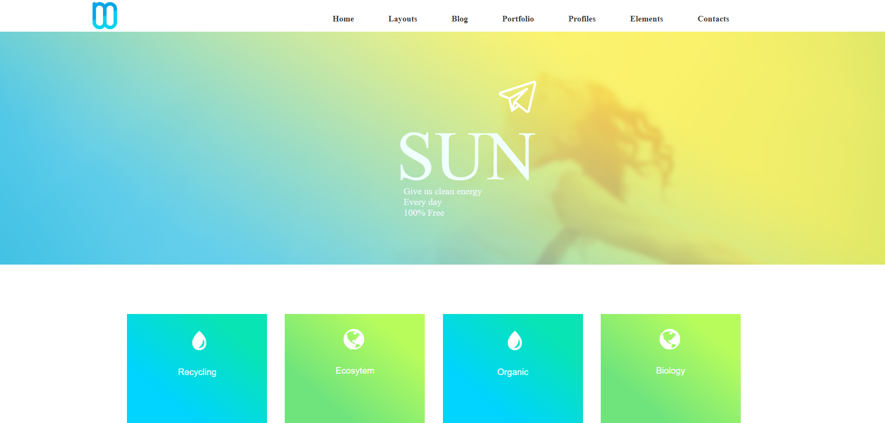
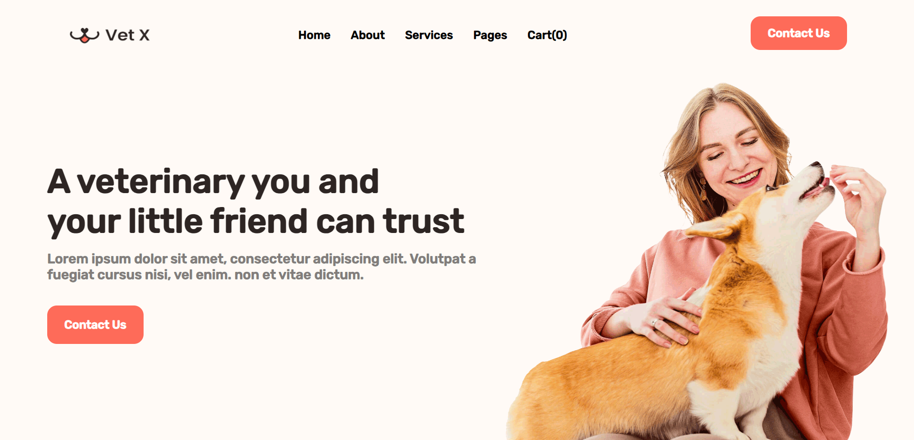
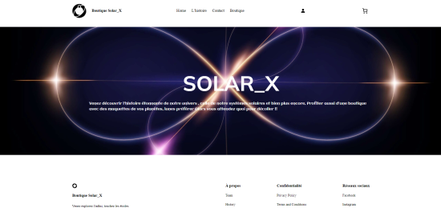
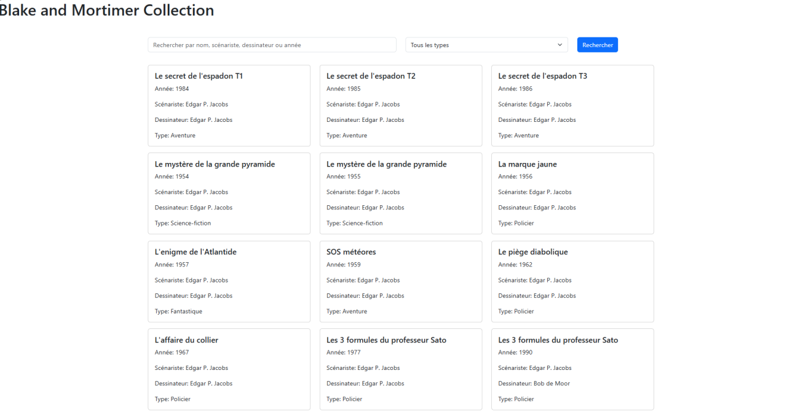
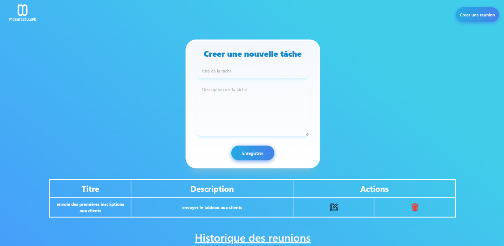
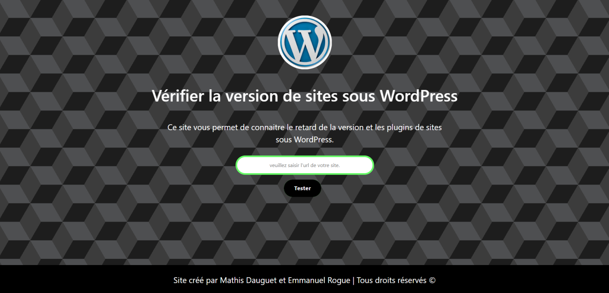

Tous mes projets
Découvrez l'ensemble de mes réalisations sur l'année (septembre) 2023-2025.

Projet Bloc7
Un site web captivant sur le thème de l'écologie. Ce projet m'a permis de maîtriser HTML et CSS dans un cadre créatif, avec un suivi personnalisé par Mr Espagelière.
Voir plus
Vet_X
Création d'un site internet responsive avec une attention particulière à l'expérience utilisateur sur tous les appareils. Projet supervisé par Mr Espagelière.
Voir plus
Projet Wordpress
WordPress est un CMS open source permettant de créer et gérer facilement des sites web. Il est flexible, personnalisable grâce à des thèmes et plugins, et accessible même sans connaissances en code.

POC de EC2
Application web en PHP permettant d'afficher et de rechercher des albums de la collection Blake et Mortimer. Utilisation d'un tableau de données pour la gestion des albums.
Voir plus
MATHX_Index
Développement d'une bibliothèque en ligne dédiée aux mathématiques, pour enseignants et élèves. Projet encadré par Mr Idasiak et Mr Martins Jacquelot.
Voir sur github
Gestion de Tache
Plateforme web pour créer et gérer des réunions avec suivi des tâches. Développé avec PHP, MySQL et Bootstrap pour faciliter l’organisation en équipe.
Voir plus
WP version checker
Application web en PHP pour analyser la version WordPress d’un site, lister les plugins, comparer la version et donner un score de sécurité avec recommandations.
Voir plus
Projet Csharp BTS2
Gestion de théâtre réalisé en C# par Noah, Milan et Emmanuel. Projet de 2ème année BTS SIO au Lycée Saint-Vincent de Senlis, méthode AGILE.
Voir sur GitHub
Projet Congé Facile
Développement d'un site en ligne dédié à la gestion des congés en entreprise, facilitant les demandes des employés. Projet encadré par Mr Martins Jacquelot, compétences sur Symfony.
Voir plus